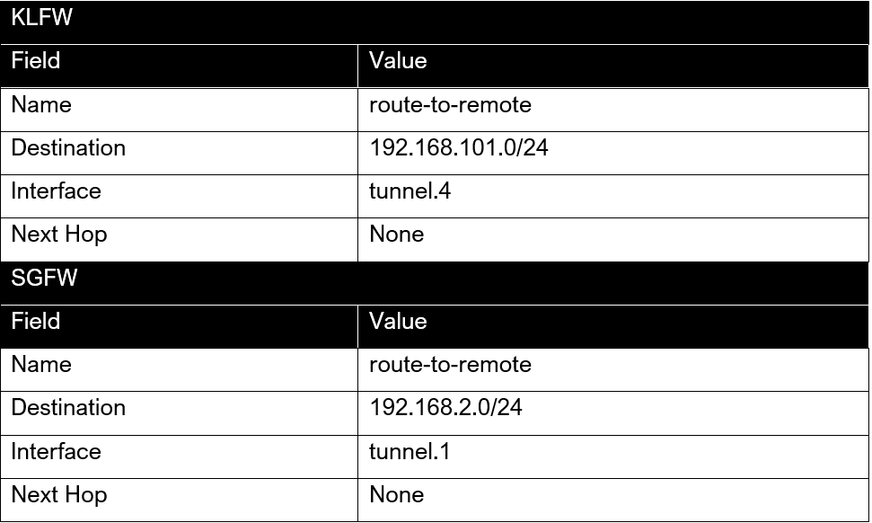

Configure Site-to-site IPSEC VPN Tunnel in Palo Alto Firewall
Introduction
The case scenario here is that Canes Pte. Ltd., an investment firm with offices in Singapore and Kuala Lumpur, Malaysia, wants their company’s network setup. The company’s assets are described as follows:
- 2 Palo Alto Firewalls
- 1 FTP Server
- 2 User Laptops
- 1 Workstation
The goal: is to establish an IPsec VPN tunnel between the Singapore and Kuala Lumpur offices to set up a secure LAN-to-LAN connection
Network Diagram
In a real-life scenario, the 2 firewalls should be in different networks. For the purposes of this assignment, we simulated the network on a smaller scale, placing both firewalls in the same local area network (192.168.1.0/24) by setting the network adapter for the public-facing interface of both firewalls to bridged mode. The resulting network topology is illustrated in the diagram below.
Ideally, firewall at Singapore will be referred to as SGFW and the firewall at Kuala Lumpur will be referred to as KLFW for ease of reading. SGFW and KLFW will each have a public IP address assigned by the ISP, and the VPN tunnel between the 2 offices will be established over the Internet. However, in our scaled-down setup, the VPN tunnel will be established between the 2 firewalls as follows.
Step 1: Create tunnel interfaces
To create a tunnel interface, you need to go to Network > Interfaces > Tunnel and select Add. We have also ensured that both SGFW and KLFW does not have the same Tunnel Interface name.
The tunnel name for SGFW will be Tunnel.1 and Tunnel.4 for KLFW as seen from the diagram above.
Creating tunnel interface for KLFW:
- Tunnel interaface name: Tunnel.4
- Virtual Router: default -- The interface needs to be part of a Virtual router
- Security Zone: VPN -- You will need to create a new security zone for VPN if you haven't already made one.
You can add an IP address for your tunnel interfaces for monitoring if you'd like but for this project we will just focus on setting up the VPN.
The final configuration for the tunnel interface on KLFW should look like this:
If you are curious about the VPN security zone configuration you can see if from here:
Follow the same steps to create the tunnel interface for SGFW
Step 2: Setting up IKE Phase 1
For IKE Phase-1 negotiation, we configured the IKE Crypto Profile and set up an IKE Phase-1 Gateway. We made sure that the parameters were the same on both SGFW and KLFW, in order for the IKE Phase-1 negotiation process to be successful.
Creating IKE Crypto Profile:
To configure the IKE Crypto Profile, you need to go to Network > Network Profiles > IKE Crypto and select Add.
The configuration are as follows, you have to configure the same for the other firewall (but of course you dont have to follow this configuration):
Configuring IKE Gateway:
To configure the IKE Gateway, go to Network > Network Profiles > IKE Gateways and select Add > General Tab.
I am going to use Pre-shared key for authentication and this must be set the same for both firewalls.
Peer IP address type will be set to IP and the IP should be the public facing interface of the peer firewall.
Creating IKE Gateway in KLFW:
We also need to configure the gateway advance option by going to IKE Gateways > Advanced Options.
Disable Passive Mode, if this is enabled, the firewall is not going to initiate any IPSec tunnel negotiation.
Enable NAT traversal to prevent intermediary devices from applying NAT to VPN communications if NAT is found to prevent the communications from working.
Exchange mode is set to Auto. Setting the negotiation requests mode to Agressive will just send everything in one go.
IKE crypto profile is the one that I previously created.
Same steps should be done to the peer firewall (SGFW).
Creating IKE Gateway in SGFW:
How it should look after:

Step 3: Setting up IKE phase 2
I need to create an IPSec Crypto profile to specify the protocols and algorithms that would be used for identification, authentication, and encryption in VPN tunnels based on IPSec SA negotiation (IKEv1 Phase-2). Again, you need to make sure that the parameters are the same on both firewalls in order for the IKE Phase-2 negotiation process to be successful.
Create IPSec Crypto Profile:
To configure the IPSec Crypto Profile, go to Network > Network Profiles > IPSec Crypto and select Add.
The IPSec Cyrpto profile should look like this in both of the firewalls:
Step 4: Setting up IPSec Tunnel
We set up an IPSec tunnel using the tunnel interface, IKE Gateway and IPSec Crypto Profile created earlier.
To configure the IPSec tunnel, go to Network > IPSec Tunnels and select Add.
The configuration are as follows:
The IPSec tunnels should look like this after:
I did not configure Proxy IDs because both sides of the tunnel were using a PAN-OS Firewall. If either side of the tunnel was a third-party VPN device (i.e. a non PAN-OS FW), then the local proxy IDs must be configured.
Step 5: Setting up static route for VPN Tunnel
To redirect traffic to the VPN tunnel, I need to set up a static route on both firewalls.
To configure the static route, go to Network > Virtual Routers > Static Routes and selected Add.
Configuration are as follows:
The static routes should look like this after:

Necessary Security Policies
Since the tunnel interface is in a zone that is different from where traffic will originate or depart, I have to create a security policy to allow traffic to flow from the source zone to the VPN zone containing the tunnel interface. To define the new security policy, go to Policies > Security, select Add and configure it according to the tables below. The following rule was created on KLFW to allow ike negotiation and ipsec/esp packets.

The final configuration for VPN-related security policy rules on KLFW is as follows:

It is important that you also create security policy rules to allow ike and ipsec/esp packets and incoming/outgoing traffic through the tunnel on SGFW
Test VPN Connection
You can find the instructions on how to test the VPN connection here: PAN-OS® Administrator’s Guide
When the VPN tunnel has been set up and configured correctly and successfully the status should turn green like this:
Any feedback or constructive criticism is welcomed! You can find me on my twitter @moveax_nic, LinkedIn @nicoleaponce or my YouTube channel!
Nov 29, 2021